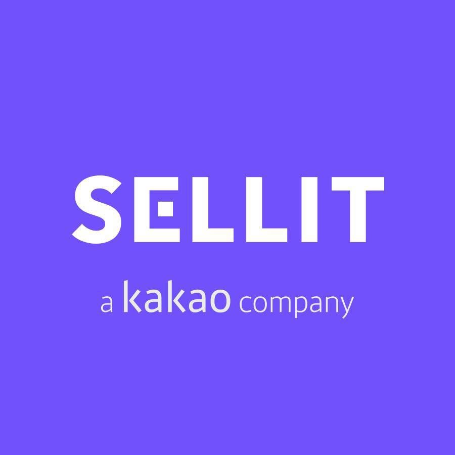
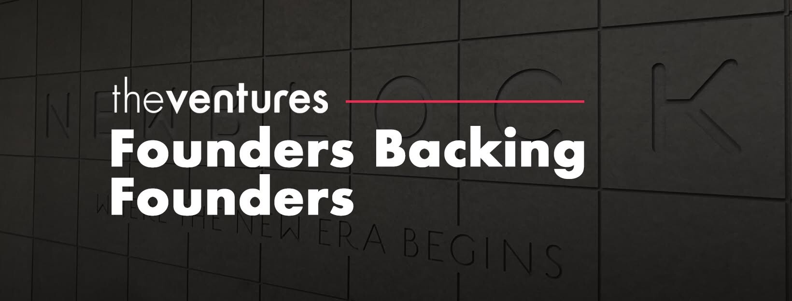

김철우 대표는 사진 3장만 찍어 보내면 되는 중고거래 '셀잇'을 시작해 카카오에 매각했으며, 이후 번개장터와 합병해 PE에 1,500억에 매각했다. 지금은 초기 투자 전문 VC '더벤처스'의 대표로, AI 등을 활용해 VC 업계의 비효율 문제를 해결해가고 있다.
사진 두 장이 전부였던 첫 창업, 셀잇
저의 첫 창업은 '셀잇'이라는 중고 거래 앱이었습니다. 미국의 '솔드(Sold)'라는 앱을 그대로 모방한 거예요. 중고거래를 원하는 제품의 사진을 찍어 올리면 대신 팔아주는 서비스였죠. 그런데 개발자들이 풀타임 직장이 있고 투잡이다 보니 개발 속도가 느렸어요.
그래서 필요한 페이지를 딱 2개만 만들었습니다. 1) 사진 찍는 버튼으로 사진 3장을 찍어 올립니다. 2) 연락처를 입력합니다. 그러면 관리자인 제가 "30만 원에 팔아드릴 수 있습니다" 이렇게 카톡으로 연락하고 중고나라에 제품을 올렸어요.
그 2개 기능만으로 운영이 됐습니다. 실제로 구매자는 돈을 보냈고 판매자는 물건을 보냈어요. 자기 집에 있는 물건을 중고로 파는 게 그만큼 번거로웠던 것을 MVP로 확인할 수 있었던 거죠.
큰 선택에 앞서 작은 피봇이 중요하다
그런데 아쉬웠던 게요. 물건이 팔리기까지 1~2주가 걸렸는데, 그 사이에 판매자가 마음을 바꾸거나 다른 사람에게 팔아버린 경우가 많았어요. 그래서 모델을 바꿨습니다. "물건을 먼저 우리한테 보내주시면 30만 원에 팔아드릴게요"라는 위탁 모델로요. 자금이 없었기 때문에, 돈도 안 보내고 일단 물건 먼저 보내달라고 했어요.
그런데 이게 됐습니다. 고객들은 눈앞에서 물건을 없애고 싶은 욕구가 컸던 거죠. 그 양이 너무 많아서, 처음엔 강북 청년 창업 센터의 작은 테이블에 물건을 쌓았다가, 나중엔 창고를 얻어 보관해야 했어요.
또 하나의 피벗은 카테고리였습니다. 초반엔 아무 물건이나 다 받았어요. 여성 구두, 드레스 같은 것들이 들어왔는데, 공대생 둘이서는 어떻게 가격 책정하고 팔아야 할지 몰랐습니다. 그래서 전자제품으로 좁혔어요. 스마트폰, 태블릿 같은 것만 취급하니까 비즈니스가 훨씬 명확해졌고, 그때부터 성장 속도가 빨라졌습니다.
이처럼 작은 변화들이 모여서 큰 사업 모델의 변화를 만들어 갔습니다. 저는 이 과정을 '스몰 피벗의 역사'라고 부릅니다. 한 번에 정답을 찾은 게 아니라, 거래가 깨지는 지점, 우리가 몰랐던 카테고리 등등을 통해, 그 작은 막힘들을 하나씩 풀어나간 거예요.
큰 시장에서 차별화하되, 기존 고객에 집중하라
이후 셀잇은 카카오에 인수됐습니다. 처음 제의가 왔을 때는 왜 인수하지 싶었는데요. 지금 생각해보면 카카오 입장에서는 매우 가치 있는 서비스였습니다. 당시 네이버 카페 '중고나라' 가입자가 1천만 명을 넘었는데, 로컬 서비스에서 하나의 서비스로 1천만 명이 나오는 건 정말 드물거든요. 중고 거래는 한국에서 1천만 명 이상이 쓸 수 있는 몇 안 되는 카테고리였어요.
그런데 당시 다른 중고 거래 서비스들은 단순한 C2C 마켓플레이스였습니다. 웹에서 하던 걸 모바일로 옮겼을 뿐, 구조는 중고나라와 똑같았어요. 차별화가 안 됐죠. 셀잇의 차별점은 위탁 매입 모델이었습니다. 판매자의 번거로움과 구매자의 사기 걱정이라는 근본 문제를 동시에 해결했고, 완전한 커머스처럼 작동했어요. 그 하나의 기능 차별화로 시장을 선점한 겁니다.

결국 법인 설립 1년이 조금 넘은 회사가 상당한 조건으로 인수됐습니다. 행복하게 팔렸어요. 하지만 이후 여러 실수를 했는데요. 그 중 가장 큰 오판은 '유아동 시장으로의 확장'이었습니다. 유아동 시장은 전략적으로 너무 좋아 보였어요. 아이들은 매년 입는 옷이나 사용하는 제품을 바꿔야 하거든요.
그런데 우리의 기존 고객은 30~40대 남성 전자제품 구매자였잖아요? 유아동 제품 고객은 주로 여성 타겟이었고요. 그동안 어렵게 만든 트래픽과 거래액이 아무 의미가 없어지고, 다시 0에서 시작하는 거였어요. 그래서 후배 창업자들에게 늘 말합니다.
사업을 확장할 때는 핵심 역량도 중요하지만, 지금 누가 우리 고객인지를 먼저 봐야 합니다. 그 고객에게 더 큰 가치를 줄 수 있는 카테고리로 가야, 어렵게 만든 트래픽과 내부 역량이 레버리지가 됩니다.
고객과 회사의 이익이 일치하는 지점이 진정한 그로스 포인트다
그러다가 셀잇은 번개장터와 합병하게 됐는데요. 여기서 맞부딪힌 첫 번째 미션은 MAU(월간 사용자 수) 100만을 넘어야 한다는 것이었어요. MAU가 100만을 넘으면 페이드(paid) 마케팅만으로는 의미 있는 성장을 만들 수 없습니다. 그러려면 어마어마한 예산이 필요하니까요.
이때 저는 그로스 해킹에 집중했습니다. 고객이 올린 중고 물건을 '콘텐츠'로 정의하고, 이걸 외부 플랫폼으로 얼마나 많이 바이럴시킬지에 집중했어요. 핵심 깨달음은 '내가 직접 바이럴시키는 것보다, 유저들이 자발적으로 공유하게 만드는 구조를 짜야 한다'였습니다.
결국 찾아낸 건 판매자의 심리였어요. 판매자가 물건을 등록한 바로 그 순간이, 물건을 팔고 싶은 욕망이 가장 큰 때입니다. 이때 "네이버 블로그나 페이스북에 공유하면 더 빨리 팔릴 거예요"라는 메시지를 주니까, 판매자가 자발적으로 공유하더라고요. 판매자의 이해관계와 회사의 목표가 완벽하게 일치하는 순간을 찾은 겁니다. 이걸로 어마어마한 레버리지 효과를 얻었습니다.

번개장터를 매각한 후, 지금은 '더벤처스'라는 초기 스타트업 투자사의 대표로 있습니다. 재미있는 건, 투자업의 본질이 중고 거래와 다르지 않다는 점입니다. 자본은 좋은 스타트업을 찾기 어렵고, 스타트업은 자본이 어디 있는지 모릅니다. 이 정보 비대칭을 해소하려고 VC가 생겨났고, 양쪽을 연결하면서 수수료를 취하죠. 중고 거래와 구조가 똑같습니다.
그런데 셀잇과 번개장터는 중고 시장을 변화시켰지만, VC 업계는 수십 년간 일하는 방식이 거의 안 변했어요. VC는 스타트업에게는 늘 "이렇게 해야 한다"고 말하면서, 정작 자기들은 변화가 느린 것 같아요. 지금은 VC도 스타트업처럼 운영하려는 생각으로, AI 등을 활용해 투자 시장의 비효율을 제거하기 위해 노력 중입니다. 감사합니다.